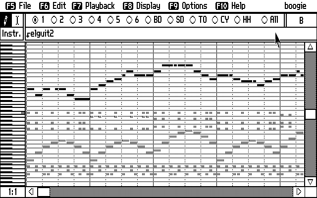

구글 브레인 프로젝트를 이끌고 있는 제프 딘이 얼마 전에 발표한 바에 따르면 구글의 기존 언어 번역 코드는 50만줄 가량이었는데, 텐서플로우로 작성된 대규모 머신 러닝 모델에 기반한 번역 코드는 500줄 수준으로 줄어들었다고 한다.
참고: Google shrinks language translation code from 500,000 to 500 lines
FM Nostalgia
머신 러닝에 기반한 여러 프로젝트를 보면서 계속 묘한 기분이 들었는데, 문득 20년 전의 기억이 떠올랐다. 바로 FM 음향에 기반한 미디 음악에서 PCM 기반의 트래커 음악들로 넘어갈 때, 그리고 완전한 PCM 기반의 음원 저장 – WAV, MP3와 RA 등 – 의 유행과 이들 음원의 유통이 본격화 되던 때에 뭔가 설명할 수 없는 아쉬움과 답답함을 느꼈었다.

내가 스스로 듣고자 해서 들었던 첫 음악들은 라디오나 비닐, 테이프가 아닌 컴퓨터 음악이었다. 대표적 FM 음향칩인 야마하 YM3812에 기반한 Ad Lib사의 AdLib 카드를 힘들게 구해, PC 본체 뒤로 손을 뻗어 볼륨을 조정하며 처음으로 ROL 음악을 들었다. 이 방식으로 게임 음악을 만들며 즐거운 시기를 보냈었다. 몇 년이 지나 고등학생이 되던 즈음에 트래커 음악을 알게 되고, FM 음원이 아닌 샘플링된 PCM 음원으로 곡을 만든다는 것이 이상했지만 이내 적응하여 이 방식으로도 음악을 만들었다.
어렸던 나는 수 KiB에 불과한 ROL, MID 나아가 트래커로 만들어진 음악이 낮은 비트레이트를 가진 WAV / MP3 파일에 비해 훨씬 듣기 좋은 음악을 제공하는데, 왜 PCM 으로 곡을 저장해서 유통해야 하는지 이해하지 못했었다. 특정 음을 흉내내기 위한 일종의 ‘악기’ 정보인 BNK 파일이 있기 때문에 아주 적은 용량의 ROL 파일만으로도 괜찮은 소리를 만들어낼 수 있었던 것을, BNK 파일이 가지고 있던 작은 정보로 그럴싸한 음을 낼 수 있었던 것이 OPL(FM Operator Type-L) 하드웨어 칩이 있기 때문이라는 것을 당시에는 알지 못했다. 하드웨어였던 OPL을 소프트웨어로 에뮬레이션 하기 위해서는 (당시 기준으로는) 상당한 컴퓨팅 파워가 필요했을 것이다.
참고: Reverse engineered SystemVerilog RTL version of the Yamaha OPL3 (YMF262) FM Synthesizer
적은 용량의 음악 파일이라는 것은 하드웨어 음원 칩, BNK 파일, 그리고 먼 훗날 거대한 용량을 자랑하는 VST 등의 도움으로 가능했던 것이다.
Data consumes logic
방대한 양의 저장소(메모리나 하드디스크, SSD와 같은)와 빠른 프로세싱 능력은 복잡하고 절차적인 알고리즘, 로직을 줄이는 것을 가능하게 한다. 구구단을 루프로 출력하는 코드와 구구단을 데이터로 가지고 있어 그대로 출력하는 코드는 어떻게 다른가? 50만줄에 해당하는 코드의 총 용량과 500줄의 코드가 작동하는데 필요한 저장소의 크기는 얼마나 차이나는가? 일반적이지 않겠지만, 50만줄이 모두 80글자로 채워져 있다고 가정해도 그 소스 코드의 전체 용량은 약 38MiB 에 불과하다. (해당 소스코드는 UTF-8으로 작성되었겠지?)
기계 학습이 가능해지는 것은 소프트웨어 만의 문제가 아니다. 코드가 동작하는 컴퓨팅 환경의 전반적인 발전이 없다면 과연 개인 컴퓨터에서 TensorFlow 예제들을 구동하며 익힐 수 있었을까.
위 참조 글에서도 다음과 같이 분명히 언급하고 있다.
Though bear in mind, Google has literally billions of lines of code in its supporting infrastructure, which the new slimmed-down system likely relies upon. No free lunch!